class: center, middle # 4DN DCIC Visualization Tools Tutorial ## 4DN Annual Meeting, Bethesda, MD #### Peter Kerpedjiev, Fritz Lekschas, Nils Gehlenborg .footnote[https://github.com/4dn-dcic/2017-annual-meeting-higlass-hipiler-tutorial] --- class: center, middle # WiFi **Username:** MARRIOT_CONFERENCE **Password:** 2017-4D .footnote[https://github.com/4dn-dcic/2017-annual-meeting-higlass-hipiler-tutorial] --- # Visualization To explore the features of a matrix, it helps to be able to see the data. Example with HiGlass: <p style="text-align: center"> 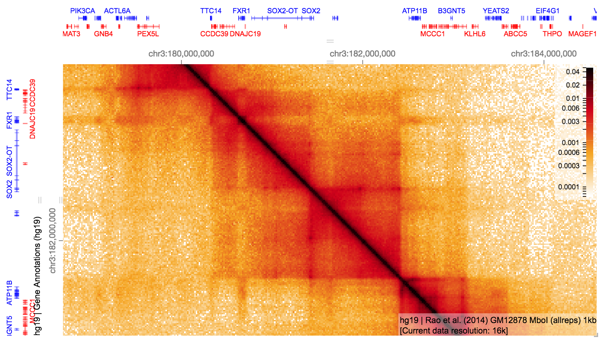 </p> .footnote[https://github.com/4dn-dcic/2017-annual-meeting-higlass-hipiler-tutorial] --- # Existing tools <p style="text-align: center"> <table style="margin: 0px auto"> <tr> <td> Juicebox </td> <td> 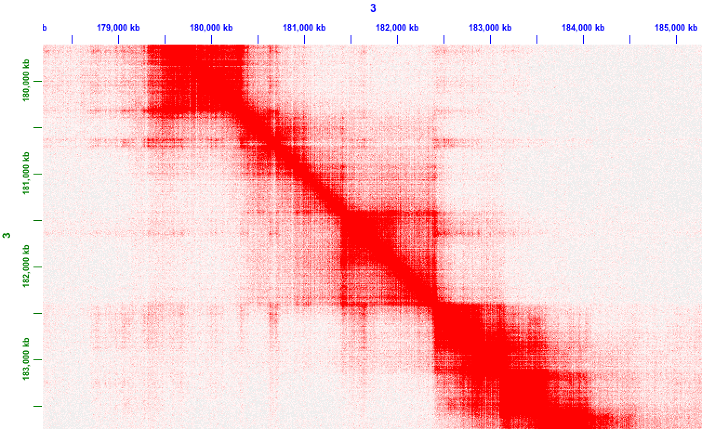 </td> </tr> <tr> <td>WashU Epigenome Browser</td> <td>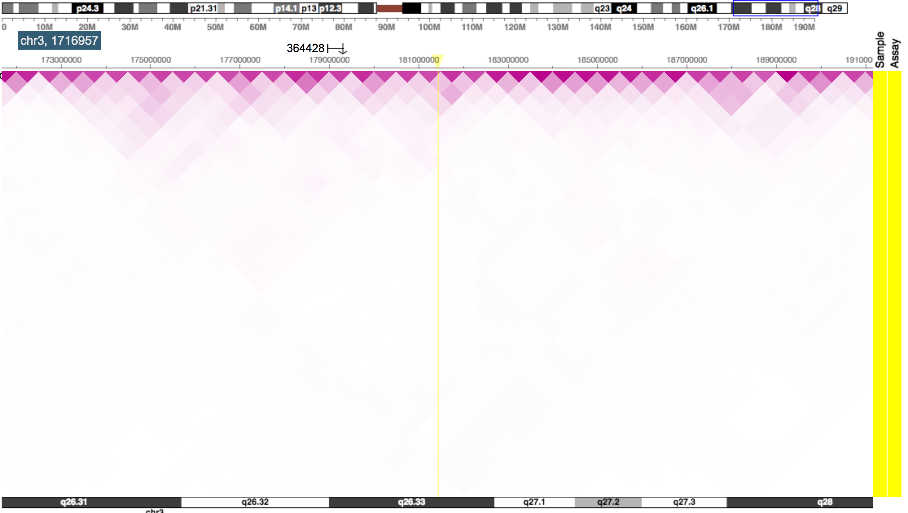</td> </tr> <tr> <td> 3D Genome Browser </td> <td>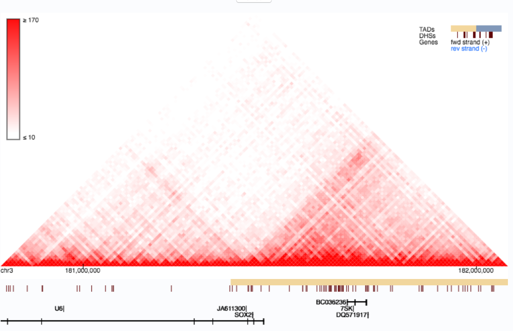</td> </tr> </table> </p> .footnote[https://github.com/4dn-dcic/2017-annual-meeting-higlass-hipiler-tutorial] --- # HiGlass <p style="text-align: center"> 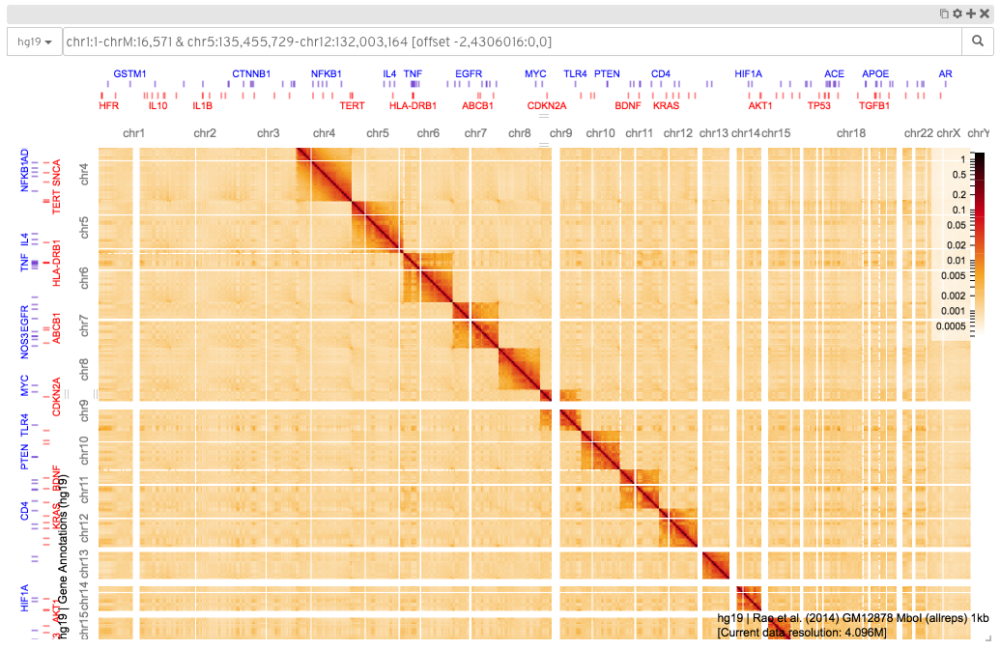 </p> HiGlass is a viewer for HiC and other genomic data. It can be used online (<a href="http://higlass.io/" >http://higlass.io</a>), or run locally with private data. <h3> </h3> .footnote[https://github.com/4dn-dcic/2017-annual-meeting-higlass-hipiler-tutorial] --- # Capabilities HiGlass is designed to facilitate the comparison of multiple genomic datasets through "tracks" and "views". <p style="text-align: center"> 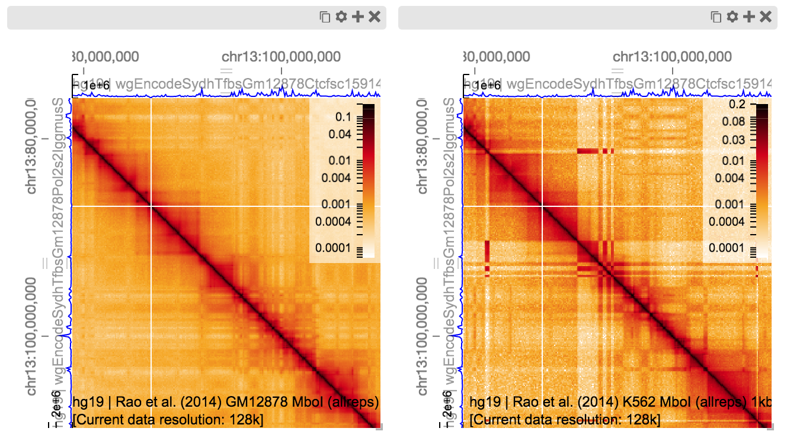 </p> .footnote[https://github.com/4dn-dcic/2017-annual-meeting-higlass-hipiler-tutorial] --- # Anatomy of HiGlass <table> <tr> <td> <p style="text-align: center"> 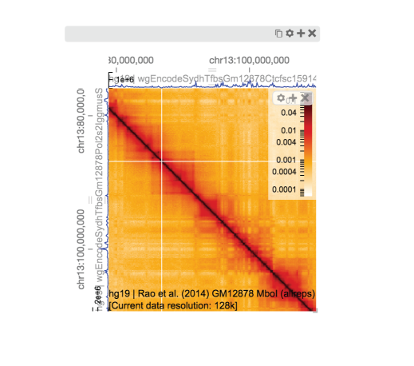 </p> </td> <td> <p style="margin-left: 15px"> HiGlass is composed of a collection of views and tracks. </p> </td> </tr> </table> .footnote[https://github.com/4dn-dcic/2017-annual-meeting-higlass-hipiler-tutorial] --- # Anatomy of HiGlass <table> <tr> <td> <p style="text-align: center"> 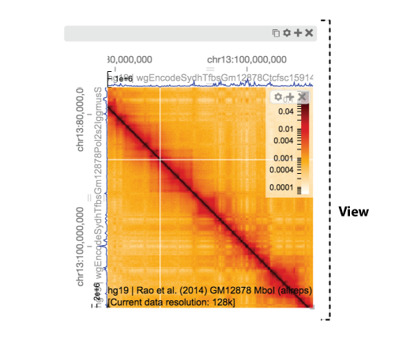 </p> </td> <td> <p style="margin-left: 15px"> Each view is composed of a set of tracks which share common axes. </p> </td> </tr> </table> .footnote[https://github.com/4dn-dcic/2017-annual-meeting-higlass-hipiler-tutorial] --- # Anatomy of HiGlass <table> <tr> <td> <p style="text-align: center"> 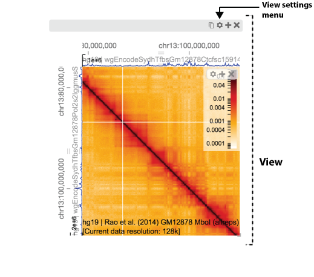 </p> </td> <td> <p style="margin-left: 15px"> Settings related to the view can be accessed via the "view settings" menu. </p> </td> </tr> </table> .footnote[https://github.com/4dn-dcic/2017-annual-meeting-higlass-hipiler-tutorial] --- # Anatomy of HiGlass <table> <tr> <td> <p style="text-align: center"> 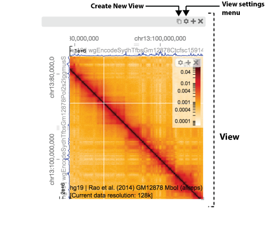 </p> </td> <td> <p style="margin-left: 15px"> New views can be created by cloning an existing view. </p> </td> </tr> </table> .footnote[https://github.com/4dn-dcic/2017-annual-meeting-higlass-hipiler-tutorial] --- # Anatomy of HiGlass <table> <tr> <td> <p style="text-align: center"> 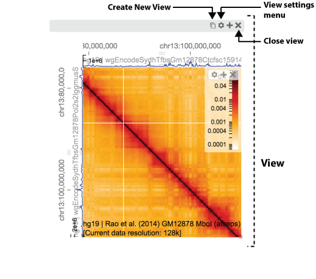 </p> </td> <td> <p style="margin-left: 15px"> Views can be closed by clicking on the "close view" button ("X"). </p> </td> </tr> </table> .footnote[https://github.com/4dn-dcic/2017-annual-meeting-higlass-hipiler-tutorial] --- # Anatomy of HiGlass <table> <tr> <td> <p style="text-align: center"> 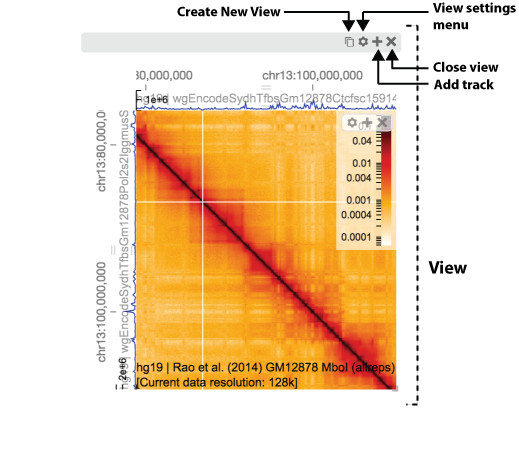 </p> </td> <td> <p style="margin-left: 15px"> The contents of a view can be modified by adding tracks. </p> </td> </tr> </table> .footnote[https://github.com/4dn-dcic/2017-annual-meeting-higlass-hipiler-tutorial] --- # Anatomy of HiGlass <table> <tr> <td> <p style="text-align: center"> 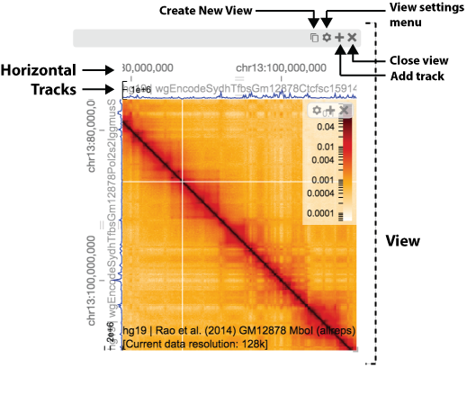 </p> </td> <td> <p style="margin-left: 15px"> Tracks can be layed out horizontally where they track the horizontal axis. </p> </td> </tr> </table> .footnote[https://github.com/4dn-dcic/2017-annual-meeting-higlass-hipiler-tutorial] --- # Anatomy of HiGlass <table> <tr> <td> <p style="text-align: center"> 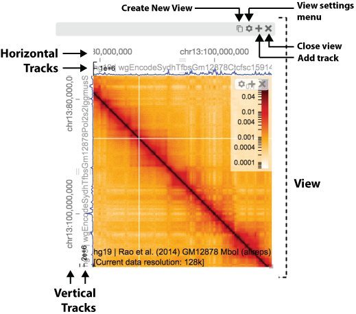 </p> </td> <td> <p style="margin-left: 15px"> Tracks can also be layed out vertically where they track the vertical axis. </p> </td> </tr> </table> .footnote[https://github.com/4dn-dcic/2017-annual-meeting-higlass-hipiler-tutorial] --- # Anatomy of HiGlass <table> <tr> <td> <p style="text-align: center"> 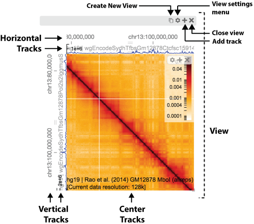 </p> </td> <td> <p style="margin-left: 15px"> And tracks can be placed in the center, where they move along both axes. </p> </td> </tr> </table> .footnote[https://github.com/4dn-dcic/2017-annual-meeting-higlass-hipiler-tutorial] --- # Anatomy of HiGlass <table> <tr> <td> <p style="text-align: center"> 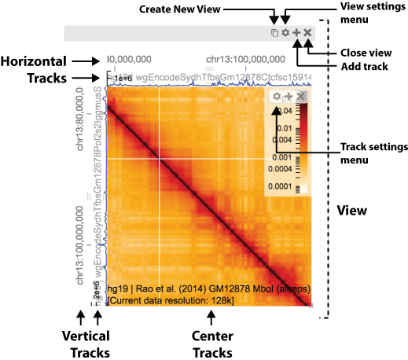 </p> </td> <td> <p style="margin-left: 15px"> Track settings can be adjusted via the track settings menu. </p> </td> </tr> </table> .footnote[https://github.com/4dn-dcic/2017-annual-meeting-higlass-hipiler-tutorial] --- # Anatomy of HiGlass <table> <tr> <td> <p style="text-align: center"> 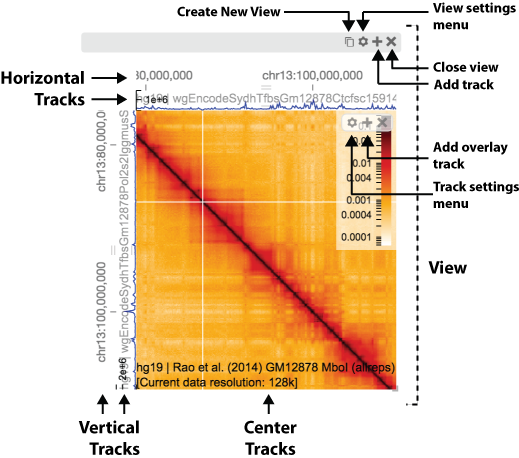 </p> </td> <td> <p style="margin-left: 15px"> Overlays can be added on top of existing tracks by clicking on the '+' icon of the track toolbar. </p> </td> </tr> </table> .footnote[https://github.com/4dn-dcic/2017-annual-meeting-higlass-hipiler-tutorial] --- # Anatomy of HiGlass <table> <tr> <td> <p style="text-align: center"> 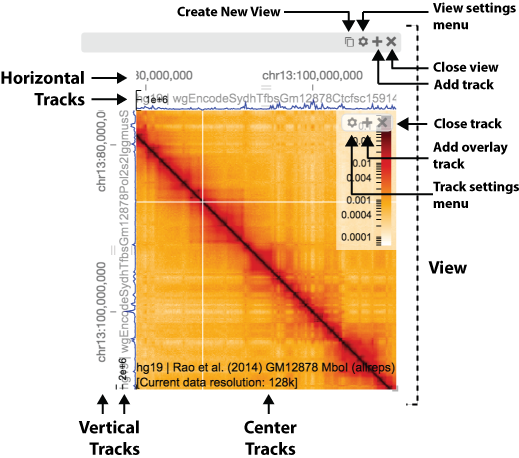 </p> </td> <td> <p style="margin-left: 15px"> Tracks can be closed by clicking on the 'X' of the track toolbar. </p> </td> </tr> </table> .footnote[https://github.com/4dn-dcic/2017-annual-meeting-higlass-hipiler-tutorial] --- # Practical exercise Re-create this figure: <p style="text-align: center"> <img src="https://cloud.githubusercontent.com/assets/2143629/24535688/a6043f1a-15a3-11e7-8197-d5d3ce227bc6.png" height=400/> </p> .footnote[https://github.com/4dn-dcic/2017-annual-meeting-higlass-hipiler-tutorial] --- class: center, middle ### Navigate to HiGlass website # [http://higlass.io/](http://higlass.io/) And click on the fullscreen icon: .footnote[https://github.com/4dn-dcic/2017-annual-meeting-higlass-hipiler-tutorial] --- # Remove genome position search bar <p style="text-align: center"> <video width="600" loop="loop" autoplay="autoplay"> <source src="img/remove-genome-position-search-bar.mp4" type="video/mp4"> </video> </p> The genome position search bar serves to show the visible extent of the data. It can also be used to navigate to a particular locus. .footnote[https://github.com/4dn-dcic/2017-annual-meeting-higlass-hipiler-tutorial] --- # Remove all existing tracks <p style="text-align: center"> <video width="580" loop="loop" autoplay="autoplay"> <source src="img/remove-tracks.mp4" type="video/mp4"> </video> </p> We don't need any of the default tracks, so we'll remove them. .footnote[https://github.com/4dn-dcic/2017-annual-meeting-higlass-hipiler-tutorial] --- # Add new dataset <p style="text-align: center"> <video width="620" loop="loop" autoplay="autoplay"> <source src="img/add-schwarzer-wt.mp4" type="video/mp4"> </video> </p> .footnote[https://github.com/4dn-dcic/2017-annual-meeting-higlass-hipiler-tutorial] --- # Resize the current view and replicate it <p style="text-align: center"> <video width="620" loop="loop" autoplay="autoplay"> <source src="img/resize-and-triple.mp4" type="video/mp4"> </video> </p> .footnote[https://github.com/4dn-dcic/2017-annual-meeting-higlass-hipiler-tutorial] --- # Replace existing dataset and copy it <p style="text-align: center"> <video width="560" loop="loop" autoplay="autoplay"> <source src="img/replace-and-double.mp4" type="video/mp4"> </video> </p> .footnote[https://github.com/4dn-dcic/2017-annual-meeting-higlass-hipiler-tutorial] --- # Lock zoom and location <p style="text-align: center"> <video width="560" loop="loop" autoplay="autoplay"> <source src="img/lock-zoom.mp4" type="video/mp4"> </video> </p> http://higlass.io/app/?config=FQWaiKoATPSMVYyOu11rBg .footnote[https://github.com/4dn-dcic/2017-annual-meeting-higlass-hipiler-tutorial] --- # Zoom top to: ``` chr14:50,143,364-88,897,098 & chr14:70,582,768-97,882,196 [offset 0,0:0,0] ``` <p style="text-align: center"> <video width="500" loop="loop" autoplay="autoplay"> <source src="img/higlass-zoom-top.mp4" type="video/mp4"> </video> </p> By providing a set of genomic coordinates, we can zoom to a defined region in the heatmap. .footnote[https://github.com/4dn-dcic/2017-annual-meeting-higlass-hipiler-tutorial] --- # Zoom bottom to: ``` chr14:66,384,132-76,643,845 & chr14:67,964,160-79,229,728 [offset 0,0:0,0] ``` <p style="text-align: center"> <video width="500" loop="loop" autoplay="autoplay"> <source src="img/higlass-zoom-bottom.mp4" type="video/mp4"> </video> </p> http://higlass.io/app/?config=JvtlSiVnSi-SSraD0zmsjA .footnote[https://github.com/4dn-dcic/2017-annual-meeting-higlass-hipiler-tutorial] --- # Project viewport <p style="text-align: center"> <video width="600" loop="loop" autoplay="autoplay"> <source src="img/project-viewport.mp4" type="video/mp4"> </video> </p> Projecting a viewport shows the extent of one view on another. In this case, we're showing the extent of the bottom views on the top. .footnote[https://github.com/4dn-dcic/2017-annual-meeting-higlass-hipiler-tutorial] --- # Add 1D track <p style="text-align: center"> <video width="580" loop="loop" autoplay="autoplay"> <source src="img/higlass-add-rnaseq.mp4" type="video/mp4"> </video> </p> We can add any sort of 1D data as a horizontal or vertical track. In this case we add RNAseq data as horizontal track on top. .footnote[https://github.com/4dn-dcic/2017-annual-meeting-higlass-hipiler-tutorial] --- # Add gene annotations <p style="text-align: center"> <video width="580" loop="loop" autoplay="autoplay"> <source src="img/higlass-add-annotations.mp4" type="video/mp4"> </video> </p> Adding gene annotations lets us verify that the RNAseq profile matches the locations of the genes (http://higlass.io/app/?config=YKBKin5SRhWIjuWwwnwpYw). .footnote[https://github.com/4dn-dcic/2017-annual-meeting-higlass-hipiler-tutorial] --- # Save as SVG (Experimental) <p style="text-align: center"> <video width="580" loop="loop" autoplay="autoplay"> <source src="img/higlass-save-svg.mp4" type="video/mp4"> </video> </p> The current view display can be saved as an SVG using the view config menu. .footnote[https://github.com/4dn-dcic/2017-annual-meeting-higlass-hipiler-tutorial] --- # Share a link <p style="text-align: center"> <video width="600" loop="loop" autoplay="autoplay"> <source src="img/higlass-export-link.mp4" type="video/mp4"> </video> </p> The current view configuration can be shared by exporting it as a link (http://higlass.io/app/?config=XVJAsgUbRva2diamiW9mfg) .footnote[https://github.com/4dn-dcic/2017-annual-meeting-higlass-hipiler-tutorial] --- # Running HiGlass locally To look at private data, you have to run HiGlass locally. This is easily accomplished using a docker container. The following commands can be found on the higlass wiki (google: higlass wiki) or go to: https://github.com/hms-dbmi/higlass/wiki ```bash docker stop higlass-container; docker rm higlass-container; docker pull gehlenborglab/higlass:v0.2.6 docker run --detach \ --publish 8989:80 \ --volume ~/hg-data:/data \ --volume ~/tmp:/tmp \ --name higlass-container \ gehlenborglab/higlass:v0.2.6 ``` .footnote[https://github.com/4dn-dcic/2017-annual-meeting-higlass-hipiler-tutorial] --- # Importing data We can import multi-res data into local instances of HiGlass. First, let's get a multires file: ```bash wget https://s3.amazonaws.com/pkerp/public/matrix.multi.cool ``` .footnote[https://github.com/4dn-dcic/2017-annual-meeting-higlass-hipiler-tutorial] --- # Importing data We can import multi-res data into local instances of HiGlass. First, let's get a multires file: ```bash wget https://s3.amazonaws.com/pkerp/public/matrix.multi.cool ``` To load it into HiGlass move it to `~/tmp`: ```bash cp matrix.multi.cool ~/tmp ``` .footnote[https://github.com/4dn-dcic/2017-annual-meeting-higlass-hipiler-tutorial] --- # Importing data We can import multi-res data into local instances of HiGlass. First, let's get a multires file: ```bash wget https://s3.amazonaws.com/pkerp/public/matrix.multi.cool ``` To load it into HiGlass move it to `~/tmp`: ```bash cp matrix.multi.cool ~/tmp ``` and run the following command: ```bash docker exec higlass-container python higlass-server/manage.py \ ingest_tileset \ --filename /tmp/matrix.multi.cool \ --datatype matrix \ --filetype cooler ``` This makes the file accessible to `higlass` and registers it with the list of available data. .footnote[https://github.com/4dn-dcic/2017-annual-meeting-higlass-hipiler-tutorial] --- # Displaying local data <table> <tr> <td> <ul> <li style="margin-bottom: 20px">Navigate to <a href="http://localhost:8989">http://localhost:8989</a></li> <li style="margin-bottom: 20px">Click on the "Add track" button</li> <li style="margin-bottom: 20px">Search for "matrix"</li> <li style="margin-bottom: 20px">Double click on "matrix.multi.cool</li> </ul> </td> <td> <p style="text-align: center"> <video width="500" loop="loop" autoplay="autoplay"> <source src="img/higlass-load-local.mp4" type="video/mp4"> </video> </p> </td> </tr> </table> .footnote[https://github.com/4dn-dcic/2017-annual-meeting-higlass-hipiler-tutorial] --- # Documentation: * HiGlass Documentation * <a href="https://github.com/hms-dbmi/higlass/wiki">https://github.com/hms-dbmi/higlass/wiki</a> * Examples * <a href="http://higlass.io/examples">http://higlass.io/examples</a> * Feedback (next 24 hours) * <a href="http://shoutkey.com/funny">http://shoutkey.com/funny (Google Form)</a> .footnote[https://github.com/4dn-dcic/2017-annual-meeting-higlass-hipiler-tutorial] ---